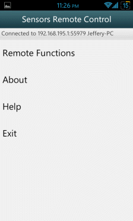

Remote Menu is the remote functions that can use to control the PC. User can choose a remote function from the list to start
remoting the PC.
Remote Menu is the remote functions that can use to control the PC. User can choose a remote function from the list to start
remoting the PC.
Sensor Remote Control Help
Content
1. Getting Started
2. Connection Page
3. Main Menu
4. Remote Menu
5. Accelerometer Mouse
6. Orientation Mouse
7. Keyboard
8. NumPad
9. Slide Show
10. Multimedia Control
��
Getting Started 1. Install Sensor Remote Control Server application on the computer that you want to control using the app. 2. Start the server and configure it as you wish. 3. Add a new server connection by accessing the auto-scan screen or enter required information manually on the client application. 4. Connect to the server by pressing the Connect button. 5. Select a remote method to start controlling your computer.
The connection page is appear on the first screen when the app launched. The Connection Page is always shown on start up, unless user have an undisconnected session previously. In this page, the user is required to input the server information, user can obtain the server information automatically by pressing SCAN button, user is also encourage to enter the server information manually, which these information have been state at the main screen of server application (after started the service). User required to enter the passkey if the server have been configured to use passkey on authentication protection.
 Main Menu is shown while authentication is succeed and connected to the server.
Remote Menu is the remote functions that can use to control the PC. User can choose a remote function from the list to start
remoting the PC.
Accelerometer Mouse is used to control the PC's mouse movement based on Accelerometer sensor. User may tilt the device left to move the mouse left, tilt the device right to move the mouse right, and so tilt to forward and backward, put the device flat to stop the movement. User required to click on Start to start controlling the Mouse and press Back to terminate the control.
Orientation Mouse is used to control the PC's mouse movement based on Orientation sensor. User required to hold the device horizontal and tilt the device left to move the mouse left, tilt the device right to move right, and so tilt to forward and backward. User required to click on Start to start controlling the Mouse and press Back to terminate the controlling.
Keyboard is used to simulate the PC's keyboard.
NumPad is used to simulate PC's NumPad for certain operations. 1-0, +,-,*,/,%,enter and backspace are included.
Slide Show is used to control general slide show such as powerpoint, photo slide show, etc.
Multimedia Control is used to control the music/video player program on the PC.
��
To lower down the volume
��
To Mute the volume
To gain the volume
To play previous file
To play next file
Play/Pause
Stop��